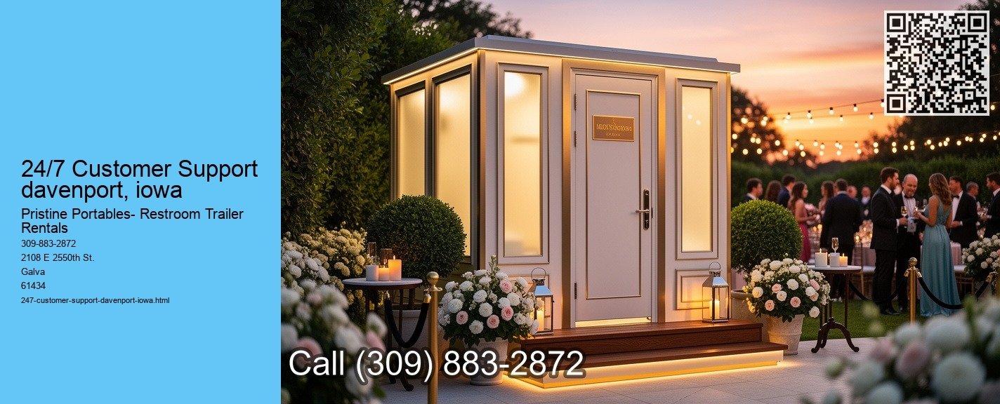

In todays fast-paced and interconnected world, the demand for round-the-clock customer support has never been more critical. In cities like Davenport, Iowa, where businesses are thriving and communities are constantly evolving, 24/7 customer support has become an essential aspect of maintaining strong relationships between companies and their clients. This essay explores the significance of 24/7 customer support in Davenport, Iowa, and how it benefits both businesses and customers alike.
Davenport, nestled along the Mississippi River, is a vibrant city that boasts a diverse range of businesses, from small local enterprises to larger corporations. This diversity in business operations underscores the importance of providing continuous customer support. Customers today expect immediate assistance, regardless of the time or day, which is why offering 24/7 support is not just a luxury but a necessity for businesses aiming to stay competitive and relevant.
One of the primary benefits of 24/7 customer support in Davenport is the ability to cater to a broad customer base with varying schedules.
Moreover, 24/7 customer support plays a crucial role in crisis management. Businesses in Davenport can encounter unexpected challenges, such as technical issues, supply chain disruptions, or sudden demand spikes.
Furthermore, the implementation of 24/7 customer support in Davenport contributes to the local economy by creating job opportunities. Customer service roles are vital in providing consistent and reliable support, and these positions often employ individuals who may prefer non-traditional working hours. This flexibility can be particularly beneficial in a community like Davenport, where a range of employment opportunities is essential for economic growth and stability.
In addition to benefiting businesses and customers, 24/7 customer support reflects positively on a companys brand image. Businesses that prioritize customer satisfaction and are willing to invest in comprehensive support systems are often perceived as more reliable and customer-centric. This positive reputation can lead to increased customer retention and attract new clients who value exceptional service.
In conclusion, 24/7 customer support is an indispensable asset for businesses in Davenport, Iowa. It not only meets the immediate needs of a diverse customer base but also strengthens relationships, enhances crisis management, and contributes to the local economy. As businesses continue to adapt to the evolving demands of the modern marketplace, providing continuous support remains a critical component of success.
Maintenance and Cleaning Services davenport, iowa